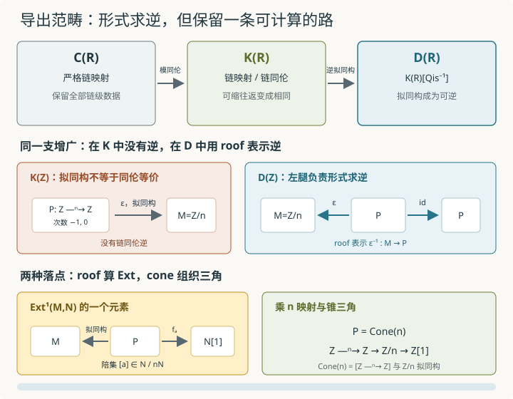

本页目录
基础衔接 21 · 导出范畴与 roofs：怎样把拟同构真的倒过来
先修：链复形、Hom 与 Ext、映射锥。本讲统一采用上链约定：\(d:C^q\to C^{q+1}\)。目标不是把“导出范畴”当作一句高级口号，而是看清 \(C(R)\to K(R)\to D(R)\) 每一步究竟忘掉什么、修复什么，并亲手算出一个由 roof 表示的 Ext 类。
一支没有链同伦逆的箭头，怎样在新世界里变成可逆？
1. 三层世界解决三种不同的麻烦
固定环 \(R\)。一个上链复形是带微分的分次 \(R\)-模
从复形走向导出范畴，要经过三层不能混称的对象：
| 层 | 对象 | 映射 | 这一层解决什么 |
|---|---|---|---|
| \(C(R)\) | \(R\)-模复形 | 严格链映射 | 保留全部链级数据 |
| \(K(R)\) | 同样的复形 | 链映射模掉链同伦 | 忽略可收缩的链级往返 |
| \(D(R)\) | 同样的复形 | 把拟同构形式地变成可逆后的映射 | 只按导出信息比较复形 |
第一步是商，第二步是局部化：
这里 \(\mathrm{Qis}\) 是拟同构组成的类。\(K(R)\) 仍然没有把所有拟同构倒过来；\(D(R)\) 的定义正是补上这些形式逆。不要把这两步压成“忽略微分细节”：链同伦与拟同构保留的信息强度不同。
2. 三个容易混淆的判断，强度并不相同
两个链映射 \(f,g:X\to Y\) 链同伦，是指存在降一次数的映射 \(h^q:X^q\to Y^{q-1}\)，使
因此 \(K(R)\) 中把 \(f\) 与 \(g\) 看成同一支箭头。若 \(f:X\to Y\) 有链映射 \(u:Y\to X\) 满足
则 \(f\) 是链同伦等价。若 \(H^q(f)\) 对每个 \(q\) 都是同构，则 \(f\) 是拟同构。总有
反向在一般环上不成立。
甚至“两个复形的各阶同调群抽象同构”也比“存在拟同构”更弱。前者只给两张同调清单，并没有给一支与微分相容、在同调上实现这些同构的箭头；有时连拟同构的锯齿都不存在。
一个锋利的例子取
放在次数 \(-1,0\)。因为 \(\ker(t:R\to R)=(t)\) 且 \(R/(t)=k\)，所以
令 \(D=k[1]\oplus k\)，微分为零，它有同样的同调清单；这里 \(k[1]^{-1}=k\)。但 \(C\) 与 \(D\) 在导出范畴中并不同构。理由可由导出张量检测：\(C\) 本身是有界自由复形，故 \(C\otimes_R^{\mathbf L}k=C\otimes_Rk\) 只在次数 \(-1,0\) 有同调；而 \(k\) 在 \(R\) 上有周期自由分解
张量 \(k\) 后所有微分都变成零，所以 \(D\otimes_R^{\mathbf L}k\) 在任意低的次数仍有非零同调。若 \(C\) 与 \(D\) 拟同构，这个保拟同构的导出运算不可能给出两种不同答案。
因此应分层记忆：
而两个反向箭头都不能无条件补上。
3. 主模型：\(\mathbb Z/n\) 的自由分解为何还不能在 \(K(\mathbb Z)\) 中求逆
令 \(n\ge2\)，并把两项自由复形写成
令 \(M=\mathbb Z/n\) 只位于次数 \(0\)。增广映射
在次数 \(0\) 是模 \(n\) 商映射，在次数 \(-1\) 是零。它诱导
所以 \(\varepsilon\) 是拟同构。
它却不是链同伦等价。任何链映射 \(s:M\to P\) 的次数 \(0\) 分量都是群同态
而这样的同态只能为零。又因为 \(M\) 只在次数 \(0\) 非零，\(M\to M\) 的零映射不可能与恒等映射链同伦。因此 \(\varepsilon\) 在 \(K(\mathbb Z)\) 中没有逆。
这就是为什么只走到 \(K(R)\) 仍不够。\(K(R)\) 消去了可收缩误差，却不会凭空制造一支不存在的反向链映射。
4. Roof：形式逆不是一支假装存在的链映射
在 \(D(R)\) 中，从 \(X\) 到 \(Y\) 的箭头可由一张 roof 表示：
其中左腿 \(s\) 是拟同构。读法是先在导出范畴中走 \(s^{-1}:X\to Q\)，再走 \(f:Q\to Y\)，所以这张 roof 表示 \(f\,s^{-1}\)。
这不是说在 \(C(R)\) 中偷偷选了一支 \(X\to Q\)。形式逆存在于局部化之后；roof 正好把“逆从哪里来”显式保留下来。两张 roof 若在某个共同加细上给出相同箭头，就表示同一个导出态射。
主模型中的 \(\varepsilon:P\to M\) 在 \(D(\mathbb Z)\) 里的逆由
表示。注意右腿是 \(P\to P\) 的真实链映射，左腿才负责形式求逆。我们没有构造不存在的链映射 \(M\to P\)。
一般地，若有 roofs
不能直接写链映射\(t^{-1}f\)，因为\(t^{-1}\)在链级未必存在。这里给出一个真正的共同加细，称为同伦拉回：
利用\(f,t\)是链映射，第二次微分的第三项是
所以W确实是复形。两投影\(a:W\to Q\)与\(b:W\to Q'\)是链映射；取第三分量H(q,q',h)=h作为降一次数的映射，就有
也就是中间方块在\(K(R)\)里交换。投影a逐项满射，它的核是\(t\)的锥移位后的同构副本（可能相差整体符号约定）；t为拟同构，所以该核无环，短正合列的同调长正合列给出a也是拟同构。于是两张roof的复合可以实际写成
W也可记为\(\operatorname{Cone}(f,-t)[-1]\)，上式明确给出了选择的坐标与符号。不能把普通拉回随意代替这个构造：普通拉回不自动保留拟同构。
两张roof的等价关系则要求存在共同加细，使到X的左复合相同且为拟同构、到Y的右复合相同；这里“相同”都是在\(K(R)\)中，即允许链同伦。由此得到的局部化满足通用性质：任意把拟同构送到同构的函子\(F:K(R)\to\mathcal E\)都唯一地经D(R)分解（在通常的自然同构意义下），在roof上取\(F(f)F(s)^{-1}\)。这说明这些新增箭头不是任意添加的规则。

导出范畴并不抹掉计算数据：它把拟同构放在 roof 的左腿，再让分解上的普通链映射承担右腿。映射锥则把同一机制组织成三角。
5. 射影分解：什么时候 roof 可以退化成一支普通链映射
设 \(P\) 是上有界的射影模复形。这里“上有界”指存在 \(N\)，使 \(q>N\) 时 \(P^q=0\)。这种 \(P\) 具有关键性质：从 \(P\) 到任意无环复形的链映射都链同伦于零。因此对任意复形 \(Y\)，自然映射给出
这个性质可从最高次数向下证明。若A无环、\(f:P\to A\)是链映射，先在最高非零次数N观察\(f^N(P^N)\subseteq Z^N(A)\)。无环使\(d_A:A^{N-1}\to Z^N(A)\)满射，\(P^N\)射影便能提升为\(h^N:P^N\to A^{N-1}\)。下一次数把\(f^{N-1}-h^Nd_P\)作为待提升的循环，再用射影性构造\(h^{N-1}\)，逐次下降得到\(f=d_Ah+hd_P\)。上有界保证这项归纳有起点；不要求向低次数有限终止。
对拟同构t，Cone(t)无环，且它的所有移位仍无环。上述零同伦性质和Hom复形的锥长正合列说明\(\operatorname{Hom}_K(P,t)\)是双射，于是任何roof都能化为从P出发的真实链映射的同伦类。这里的“唯一”是同伦类唯一，不是选出的链映射或提升唯一。
若 \(X\in D^-(R)\)，选择一个上有界的射影分解
便有
右边只需计算链映射模链同伦。roof 的左腿并未消失，而是被固定成 \(p_X\)；所有其他 roof 都能唯一地折算到这个选择上。
复合也能具体完成。设
因为 \(P_X\) 有上述性质，\(p_Y:P_Y\to Y\) 诱导
所以可把 \(f\) 提升为 \(\widetilde f:P_X\to P_Y\)，满足
于是 \(\beta\alpha\) 由普通复合 \(g\widetilde f:P_X\to Z\) 表示。不同提升只差链同伦，故导出态射不变。
这个结论有明确边界：无界的逐项射影复形不一定具有上述性质。 无界导出范畴通常改用 K-projective 分解；对右导出函子常用 K-injective 分解，对导出张量常用 K-flat 分解。不能把“每一项都射影”当成无界情形的万能通行证。
6. 把一张 roof 算成 Ext：\(\mathbb Z/6\) 到 \(\mathbb Z/4[1]\)
现在令
仍用 \(P=[\mathbb Z\xrightarrow{n}\mathbb Z]\) 分解 \(M\)。Hom 复形 \(\operatorname{Hom}_{\mathbb Z}(P,N)\) 在次数 \(0,1\) 是
负号来自 Hom 微分
它不改变本例的核与余核。于是
而更高 Ext 为零。
一个元素 \(a\in N\) 定义链映射
它给出导出态射的 roof
若 \(a-b\in nN\)，则 \(f_a\) 与 \(f_b\) 链同伦；反之亦然。因此 roof 类恰好由 \([a]\in N/nN\) 参数化。这一次，Ext 不再只是一个由定理报出的群：每个元素都变成了一张可写出的 roof。
取 \(n=6,m=4\)。在 \(N=\mathbb Z/4\) 上，乘 \(6\) 等于乘 \(2\)，所以
故
\(a=[1]\) 的 roof 代表非零生成元；\(a=[3]\) 与它同类，因为 \([3]-[1]=[2]\in6N\)；\(a=[2]\) 代表零类。若再给群同态 \(u:N\to N'\)，复合 \(u[1]\circ f_a\) 只是把 roof 的右腿改成 \(u[1]f_a\)。分解让导出复合重新成为可检查的链映射复合。
还可以计算一个真正需要提升的复合，而不只做目标上的后复合。令
取\(\alpha:X\to Y\)为\([1]\mapsto[2]\)，以及\(\beta:Y\to N[1]\)为右腿代表元\(a=1\)的Ext类。把α提升到两个自由分解\(P_6\to P_4\)时，次数0的映射是乘2；链条件要求
所以次数−1必须乘3。复合\(\beta\alpha\)的右腿代表元因此是\(3\in\mathbb Z/8\)，它在\((\mathbb Z/8)/6(\mathbb Z/8)\cong\mathbb Z/2\)中非零。若误用次数0的系数2代替次数−1的3，就会错误地算成零类。
一般\([1]\mapsto[b]:\mathbb Z/n\to\mathbb Z/m\)要求\(m\mid nb\)；选整数代表b后，提升两次数分别是b与nb/m。改变b为b+m使低次数提升多n，正好改变复合右腿一个nN中的元素，所以导出类不依赖代表选择。
7. 映射锥与三角：负号怎样保证结构没有坏掉
对链映射 \(f:X\to Y\)，定义移位
以及映射锥
这给出 \(K(R)\) 和 \(D(R)\) 中的标准三角
第二分量的负号同时保证 \(d_{\rm Cone}^2=0\)，并保证投影 \(\operatorname{Cone}(f)\to X[1]\) 是链映射。三角不是把三个对象画成循环就自动成立；它携带的是由映射锥产生的特定结构。
令 \(f\) 是 \(\mathbb Z[0]\) 上的乘 \(n\) 映射。则
并且 \(P\xrightarrow{\simeq}\mathbb Z/n\)。所以标准三角在 \(D(\mathbb Z)\) 中可改写为熟悉的
它把“乘 \(n\) 的余核”与“一次移位后的连接态射”放进同一个对象。这里不能把三角范畴中的三角简单当作阿贝尔范畴的短正合列；导出范畴一般没有让每支态射都拥有普通核、余核的阿贝尔结构。
8. 亲手改变代表元，再检查锥的符号
先预测\(n=6,m=4\)时\(a=1,3,2\)分别属于哪个Ext类，然后打开实验。程序实际枚举\(\mathbb Z/m\)中微分−n的核、像、陪集以及零同伦的见证h。层级切换只改变ε是否可逆的解释，有限群的算术不会随着术语改变。
无脚本核对：默认\(n=6,m=4,a=1\)，微分输出依次为\(0,2,0,2\)；核与像都是\(\{0,2\}\)，Ext的陪集为\(\{0,2\}\)与\(\{1,3\}\)。a=1为非零类，a=3仍是同一类；a=2为零类，h=1满足\(6h=2\pmod4\)，给出实际零同伦见证。
符号开关使用下面的最小反例。令
正确的 \(\operatorname{Cone}(f)\) 在次数 \(-2,-1,0\) 的微分为
两次微分给出 \(x-x=0\)，而且 \(\operatorname{Cone}(\operatorname{id})\) 可缩。若把第一个箭头错误改成 \(x\mapsto(x,x)\)，复合变成 \(2x\)；在特征不为 \(2\) 时，它甚至不再是复形。
默认取Q与标准负号，两次微分为零，各阶同调维数均为0。若切到错误正号，程序报告“不是复形”，不再套用维数减秩公式。切到特征2后，两个符号相同；请用下一题解释这为何不能支持一般地删掉负号。
9. 两道迁移题
题一。 取 \(M=\mathbb Z/8\)、\(N=\mathbb Z/12\)。计算 \(\operatorname{Hom}(M,N)\) 与 \(\operatorname{Ext}^1(M,N)\)，并判断 roof
何时代表零。\(a=[1]\) 代表什么？
查看 Hom 复形与 roof 商类
Hom 复形是
乘 \(8\) 的核为 \(\{[0],[3],[6],[9]\}\cong\mathbb Z/4\)，所以
像为 \(8N=\{[0],[4],[8]\}\)，故余核也有 \(4\) 个元素：
\(f_a\) 链同伦于零当且仅当 \(a\in8N\)，即 \(a\in\{[0],[4],[8]\}\)。\(a=[1]\) 的 roof 是 \(\mathbb Z/4\) 的生成元。
题二。 对上一节的 \(C=[k\xrightarrow{1}k]\)，逐次验证正确符号给出的 \(\operatorname{Cone}(\operatorname{id}_C)\) 无同调。再说明错误正号为什么在特征 \(2\) 时没有被 \(d^2\) 检验抓住，但仍不能据此宣布所有 cone 符号都可删。
查看微分、同调与特征边界
正确微分是
第一支箭头单射；第二支满射；第二支的核是 \(\{(y,-y)\}\)，恰好等于第一支的像。因此三个次数的同调都为零。事实上 cone of identity 总是可缩。
若错误地用 \(x\mapsto(x,x)\)，两次微分是 \(2x\)。特征 \(2\) 时这个数值碰巧为零，而且 \(-x=x\)，所以该特例看不出差异；但在一般环上 \(2\) 不为零。统一的移位与 cone 约定必须对任意底环成立，不能由一个特征 \(2\) 的退化现象篡改定义。
速查与资料
\(C(R)\) 保留严格链映射；\(K(R)\) 把链同伦的映射识别；\(D(R)\) 再把拟同构形式求逆。导出态射可写成 \(X\xleftarrow{\simeq}Q\to Y\)，而上有界射影分解把它化成链映射模同伦。\(\operatorname{Ext}^1_R(M,N)\) 就是 \(\operatorname{Hom}_{D(R)}(M,N[1])\)；映射锥给出 \(X\to Y\to\operatorname{Cone}(f)\to X[1]\)。
定义与边界可核对 Stacks Project：Homotopy category、Chain homotopy、Derived categories 与 Derived category of a ring；上有界射影复形的计算性质见 bounded above complexes of projectives，移位和锥的符号约定见 Sign rules。本讲只建立模复形上的可计算入口，不展开 Verdier 公理、大小问题、dg/∞-增强、t-结构、谱序列或层的导出下降；D-模、栈与六函子留给后续专题。核查：2026-09-09。